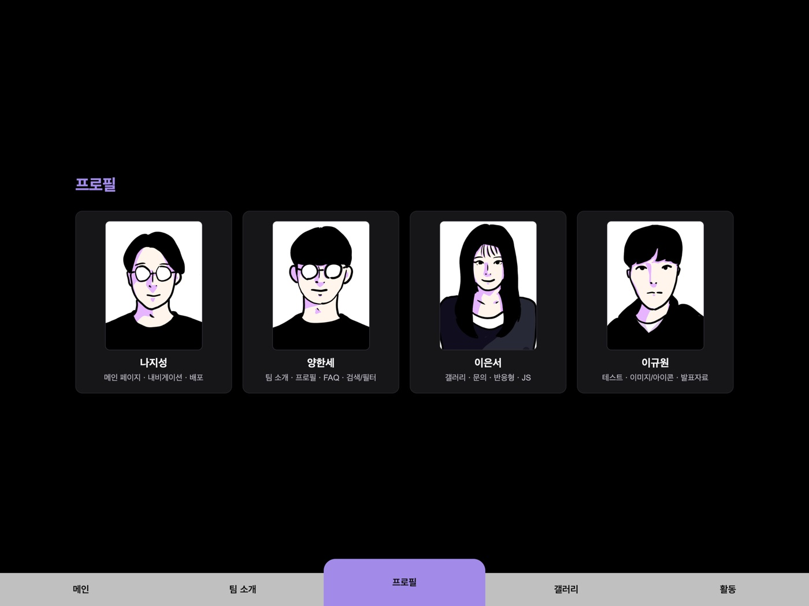
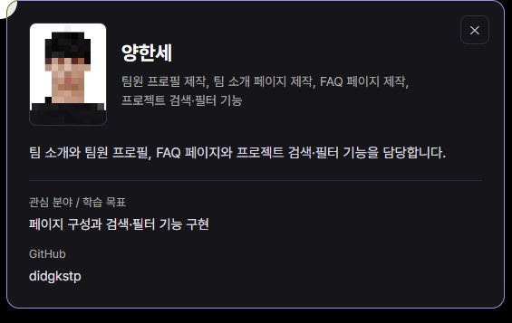
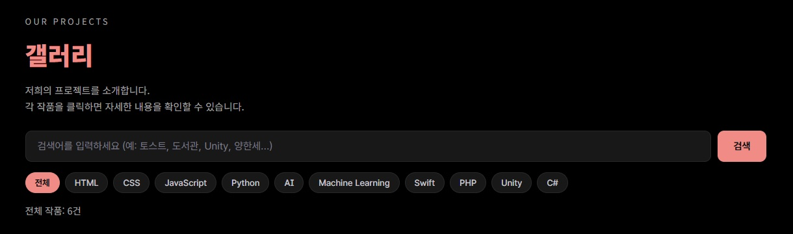
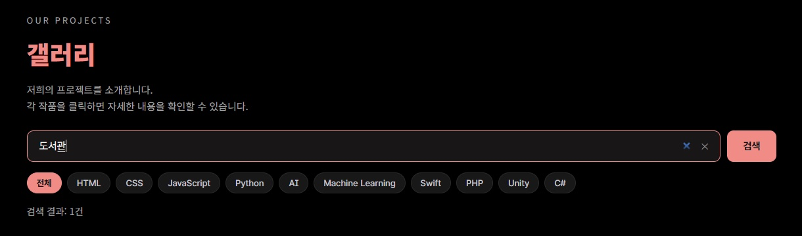
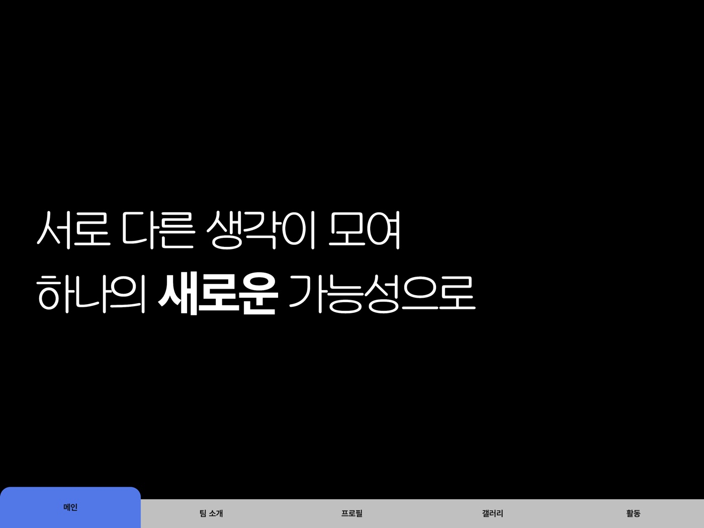
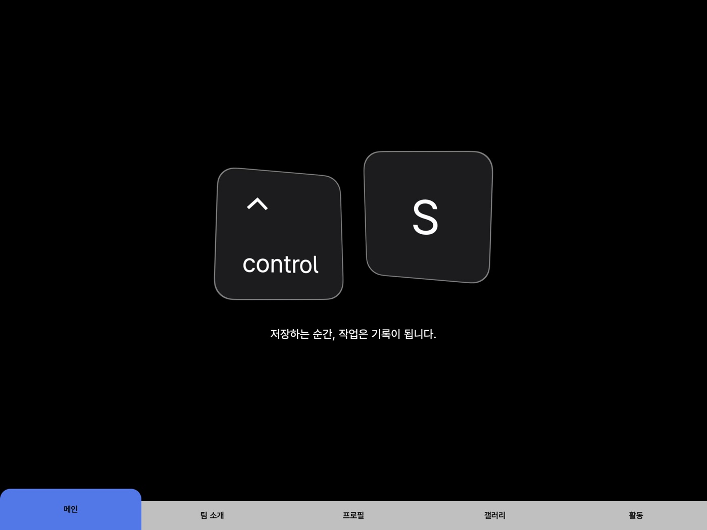
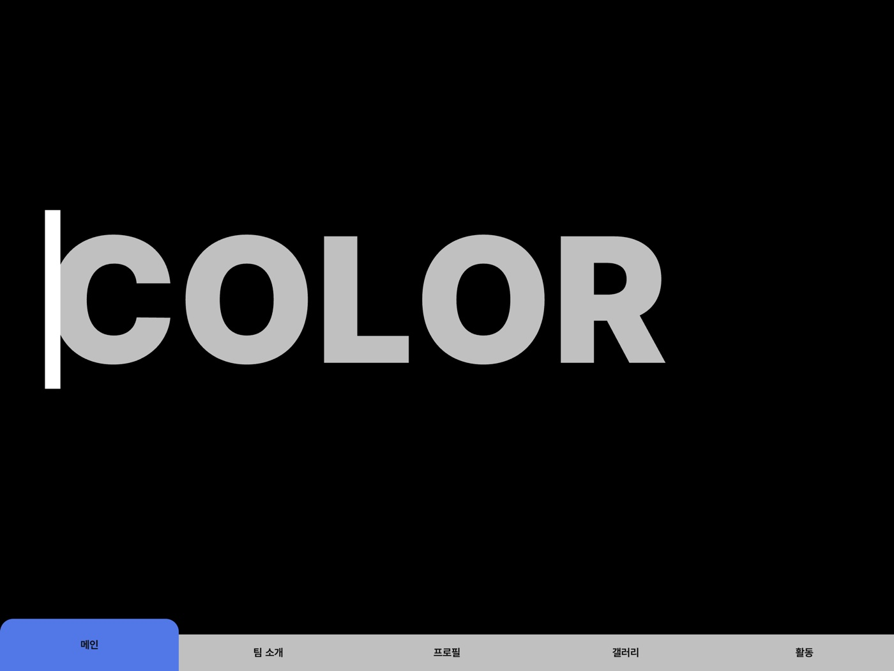
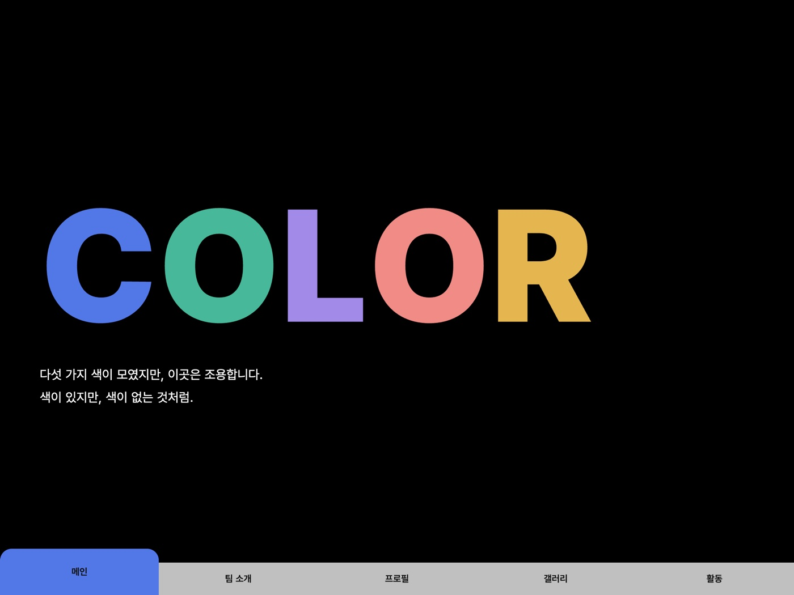
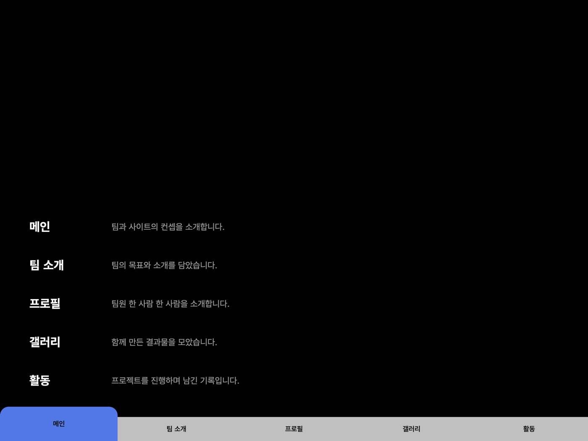
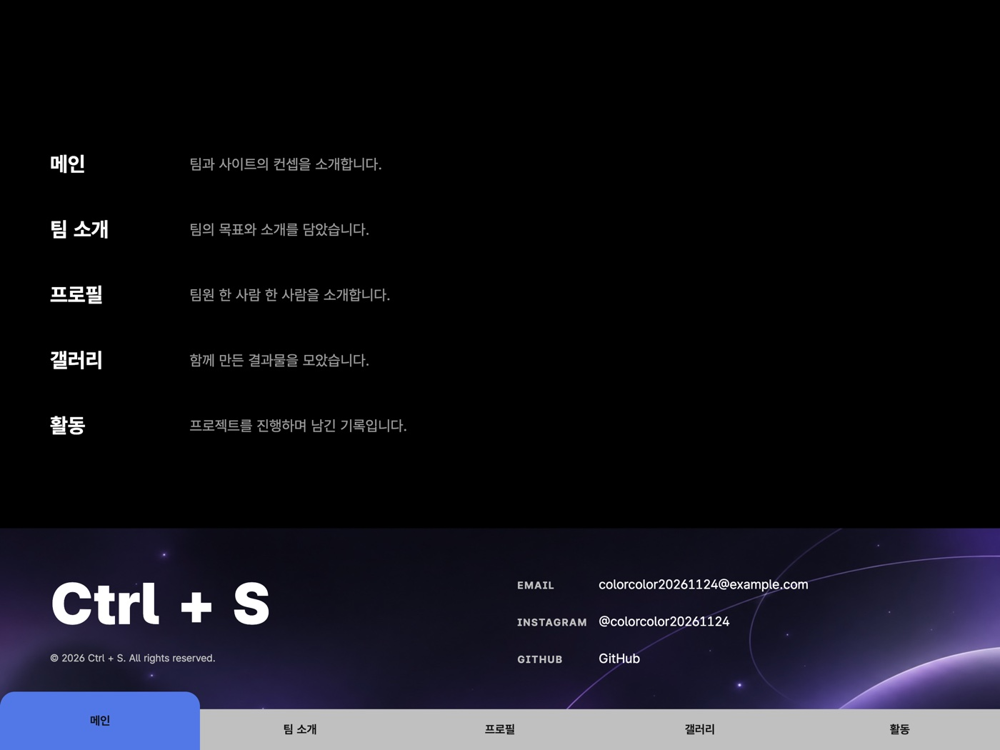

활동
프로젝트를 진행하며 남긴 기록입니다.
-
프로필 페이지
팀원의 사진과 이름, 맡은 역할을 보여주고, 누르면 상세 내용이 열립니다. 리뷰를 거쳐 상세 창의 색을 줄였고, 사진은 직접 그린 그림으로 바꿨습니다.


-
검색 기능
갤러리의 프로젝트를 키워드와 기술 태그로 찾을 수 있게 했습니다.


-
메인 페이지
팀을 대표하는 문구와 핵심 디자인 요소인 색을 담았습니다. 문구, 키보드 키, COLOR, 각 페이지로 이어지는 링크를 차례로 배치했습니다.





-
사용성과 화면 테스트
각 페이지의 화면을 확인하며 메뉴 이동, 화면 크기별 배치, 이미지 표시를 점검하고 있습니다.
-
공통 푸터
모든 페이지 하단에 같은 푸터를 넣었습니다. 이메일과 SNS 링크만으로 충분하다고 판단해 문의하기 기능은 넣지 않았습니다.
